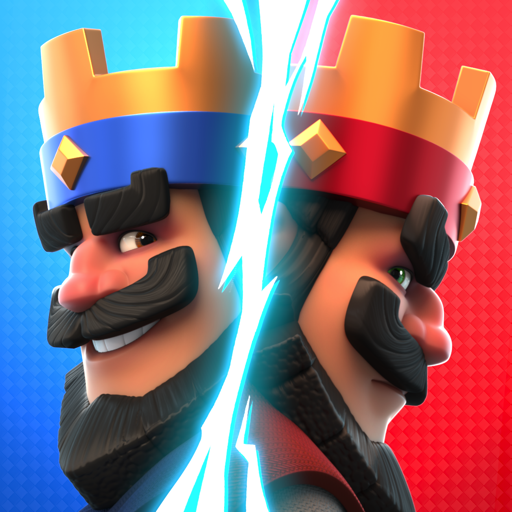
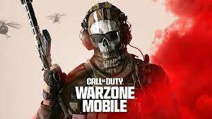
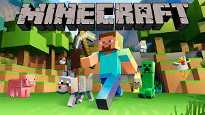

Juegos
Free Fire
Free Fire es un juego de disparos en tercera persona disponible para dispositivos móviles. Ambientado en un mundo de supervivencia, los jugadores luchan entre sí en partidas emocionantes para ser el último en pie.
Clash Royale
Clash Royale es un juego de estrategia en tiempo real desarrollado por Supercell. Los jugadores construyen mazos de cartas con personajes de la franquicia de Clash of Clans y compiten en duelos online.
Fortnite

Fortnite es un juego de batalla real desarrollado por Epic Games. Los jugadores se lanzan en paracaídas a una isla, buscan armas y recursos, y luchan para ser el último sobreviviente en un campo de batalla en constante contracción.
Call of Duty
Call of Duty es una serie de videojuegos de disparos en primera persona. Con una amplia variedad de títulos y modos de juego, Call of Duty ofrece experiencias de combate realistas tanto en campañas para un jugador como en partidas multijugador.
Minecraft
Minecraft es un juego de construcción y aventuras donde los jugadores exploran mundos generados aleatoriamente y construyen estructuras con bloques. Con infinitas posibilidades creativas, Minecraft ha capturado la imaginación de millones de jugadores en todo el mundo.